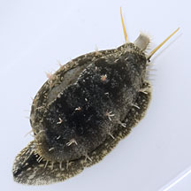
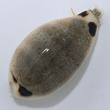
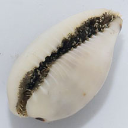
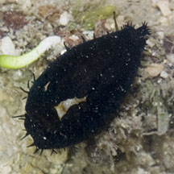
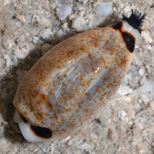
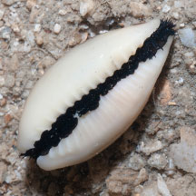
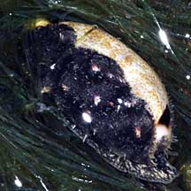
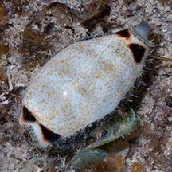
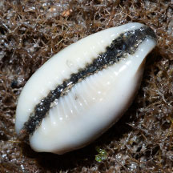

|
|
| shelled snails text index | photo index |
| Phylum Mollusca > Class Gastropoda > Family Cypraeidea |
| Four-spot
cowrie Eclogavena quadrimaculata Family Cypraeidae updated Jul 2020 Where seen? This little cowrie is sometimes seen on our Southern shores among coral rubble near living reefs. It was previously known as Cypraea quadrimaculata. Features: 2-3cm. Shell cylindrical, generally pale blue with 4 very pale brown bands and small brown speckles all over. There are four large rather triangular brown spots on the shell, two spots at the front end of the shell and two at the back end. The underside is white, the 'teeth' are raised and not coloured. The living animal has a dark to black mantle with white or pinkish spots. When the shell is completely covered in its mantle, it is sometimes mistaken for a sea slug. Here's more on how to tell apart slugs and animals that look like slugs. |
 Beting Bemban Besar, Aug 12 |
 |
 Raised 'teeth' on the underside. |
 Sisters Island, Oct 11 |
 Sisters Island, Oct 11 |
 Sisters Island, Oct 11 |
|
 Sentosa, Sep 08 |
 Sentosa, Sep 08 |
 Sentosa, Sep 08 |
| Four-spot cowries on Singapore shores |
On wildsingapore
flickr
|
| Other sightings on Singapore shores |
|
Acknowledgement
References
|